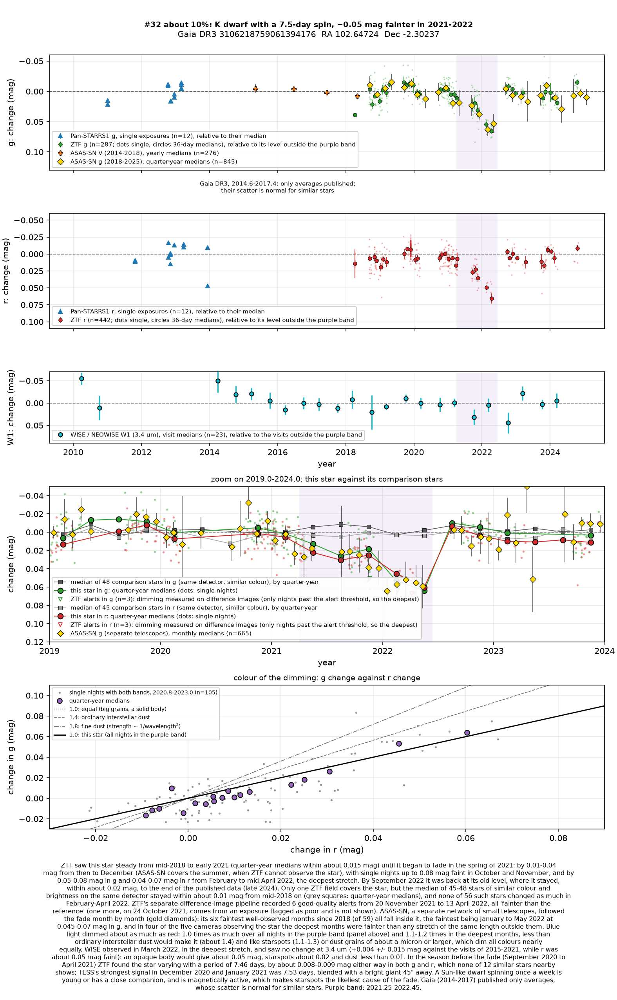
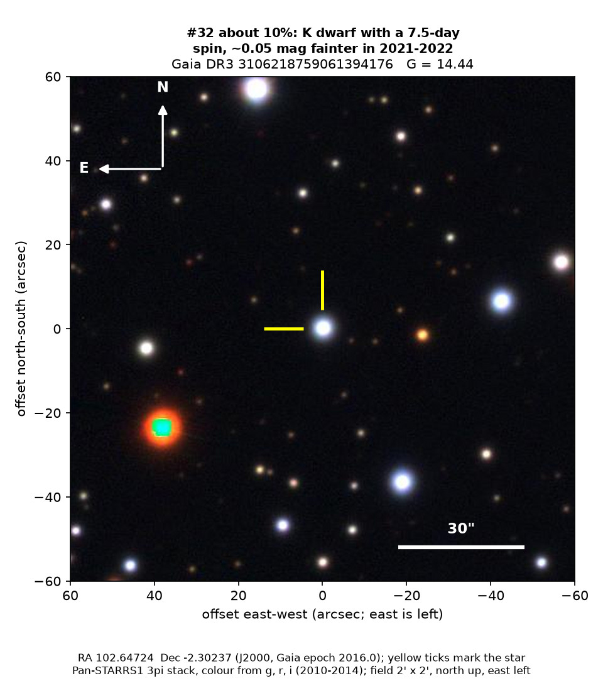
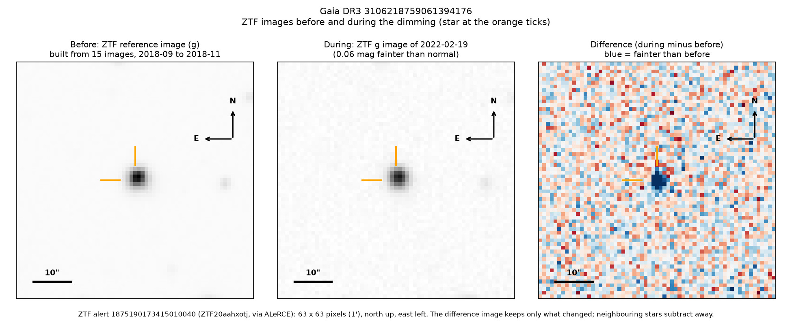
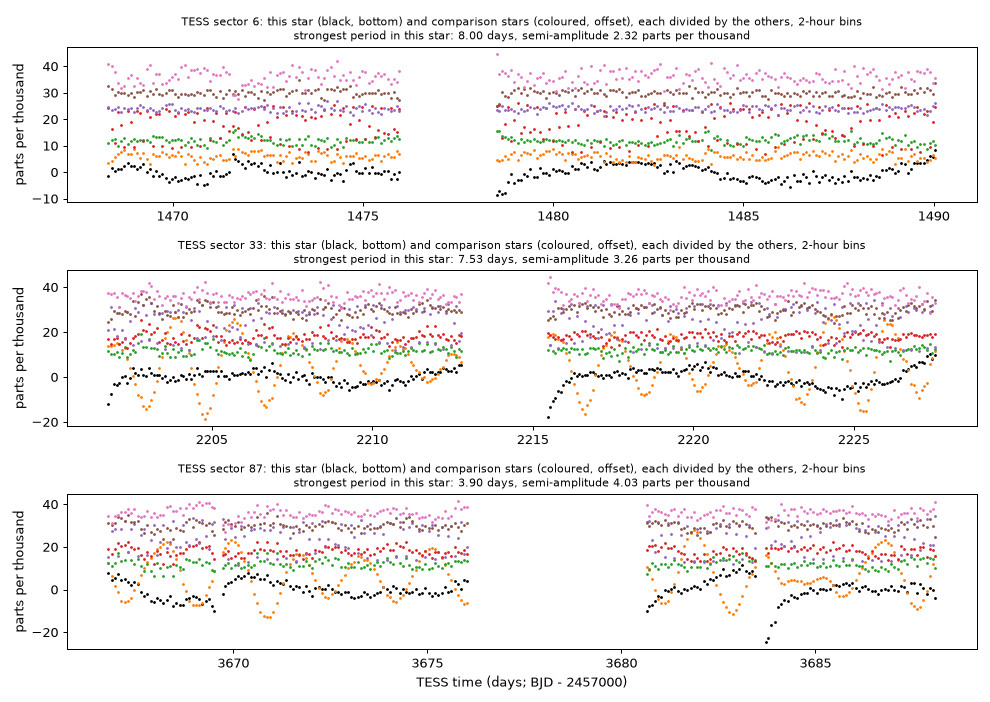

Professor of Mathematics
Paata Ivanisvili
Department of Mathematics, University of California, Irvine

Candidate 32: a cool Sun-like dwarf that faded for about a year
Why this estimate. The fade is certainly real: the ZTF survey telescope at Palomar Observatory in California and ASAS-SN, a worldwide network of small telescopes, both recorded it while comparison stars stayed steady. But just before it, ZTF caught the star’s light rising and falling every 7.5 days, and NASA’s TESS space telescope found a similar period. A Sun-like dwarf that spins this fast is magnetically active, its starspots can dim it by a few per cent, and green and red light dimmed about equally, as spots make them do, so spots are the likelier cause.
How to read the pictures. The finder chart shows a patch of sky two arcminutes across, about a fifteenth of the Moon’s width, with north up and east to the left. The star sits between the two yellow ticks, and the white bar is 30 arcseconds long. On a light curve the vertical axis is magnitude, a brightness scale on which larger numbers mean fainter stars, and it is drawn so that down means fainter. Purple shading marks the dimming. Each survey uses slightly different filters, so each is compared with its own normal level. The ZTF pictures show ZTF’s reference image of the star, an image taken during the dimming, and the difference between the two, in which only what changed remains: blue means fainter and red brighter. On the TESS light curves the star is black and the comparison stars are coloured.

What changed. The star is a cool Sun-like dwarf, a little smaller and cooler than the Sun, about 700 parsecs away near the plane of the Milky Way. ZTF saw it steady, within about 0.015 magnitudes, from 2018 to March 2021. It then faded slowly, and from January to May 2022 it was 0.045 to 0.07 magnitudes faint in green and red light, about 4 to 6 per cent less light. It was back to normal by August 2022 in ASAS-SN and by September in ZTF. ZTF’s alert system, which compares each new image with a reference image, flagged it six times during the fade, and ASAS-SN’s six faintest well-observed months since 2018 all fall inside it.
Why it might matter. Starspots are the likeliest cause. In the season just before the fade, ZTF found the star varying with a period of 7.46 days, in green and red light alike, and none of 12 similar stars nearby shows such a signal. A Sun-like dwarf that spins once every 7.5 days is either young or kept spinning by a close companion, and either way magnetically active; the spots of such stars grow and decay over months and years, changing their brightness by several per cent. Green light dimmed 1.0 to 1.2 times as much as red, as spots would make it, though large dust grains would too; ordinary interstellar dust gives 1.4.
Dust passing in front of the star could still explain the slow fade and quick recovery. NEOWISE saw no clear change at 3.4 microns in March 2022, which argues against an opaque body but cannot tell spots from dust. A spectrum would settle the question: strong emission in the calcium H and K lines, or lithium in the star’s atmosphere, would confirm a young, active star.
No record of the fade could be found. The star is not in SIMBAD, VSX (the variable-star index), Gaia’s variable-star lists or the other catalogues consulted, nor among the dimming stars of Tzanidakis et al. (2025), and there is no Transient Name Server entry, Gaia alert or paper giving its Gaia number. ZTF’s alert system holds only machine-generated classifications for it. But a young spotted star that varies by a few per cent would be an ordinary find, not an anomaly.
- Star
- Gaia DR3 3106218759061394176, a cool Sun-like dwarf of early K type
- Location
- RA 102.64724°, Dec −2.30237° (J2000), in Monoceros, 1.2 degrees south of the Milky Way’s mid-plane
- Distance
- about 700 parsecs (2,300 light-years)
- Brightness
- Gaia G = 14.44, far too faint for the eye
- Probability
- This candidate is unconfirmed. The percentage under the title is an estimate of the chance that it is a real, previously unrecorded case of the kind described. The estimate has not been checked by outside experts. See the introduction to all fifty-eight candidates.
- Caveat
- The rotation signal is clear in only one season, and the matching TESS signal is weak and blended with a bright giant. Only one ZTF field covers the star. Several other stars in the same broad part of the sky, one of them already published by Tzanidakis et al. (2025), were also faint in late 2021 and early 2022, but ASAS-SN, which shares no equipment with ZTF, saw this fade too. There is no spectrum.


